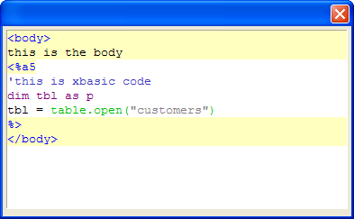

Text Box A5W Directive
Syntax
%A5W%
Description
The %a5w% flag makes the text box behave like an editor for Alpha Five web pages (e.g. .a5w pages). The html tags are color coded. The text inside the <%a5w ... %> tags are interpreted as Xbasic and all of the bubble help and auto-complete for Xbasic works correctly.
|
dim txt as P dim txt.object as P txt.text = <<%a% <body> this is the body <%a5 'this is xbasic code dim tbl as P tbl = table.open("customers") %> </body> %a% ui_dlg_box("",<<%dlg% [%A5W%.75,15txt]; %dlg%) |
This code produces the following dialog box.

See Also
Xdialog Language Directives and Operators, Text Box Syntax, Text Box F Directive